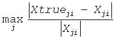

Uses extra precise iterative refinement to compute the solution to the system of linear equations with a Hermitian indefinite coefficient matrix A applying the diagonal pivoting factorization.
Syntax
call chesvxx( fact, uplo, n, nrhs, a, lda, af, ldaf, ipiv, equed, s, b, ldb, x, ldx, rcond, rpvgrw, berr, n_err_bnds, err_bnds_norm, err_bnds_comp, nparams, params, work, rwork, info )
call zhesvxx( fact, uplo, n, nrhs, a, lda, af, ldaf, ipiv, equed, s, b, ldb, x, ldx, rcond, rpvgrw, berr, n_err_bnds, err_bnds_norm, err_bnds_comp, nparams, params, work, rwork, info )
Include Files
- mkl.fi, lapack.f90
Description
The routine uses the diagonal pivoting factorization to compute the solution to a complex/double complex system of linear equations A*X = B, where A is an n-by-n Hermitian matrix, the columns of matrix B are individual right-hand sides, and the columns of X are the corresponding solutions.
Both normwise and maximum componentwise error bounds are also provided on request. The routine returns a solution with a small guaranteed error (O(eps), where eps is the working machine precision) unless the matrix is very ill-conditioned, in which case a warning is returned. Relevant condition numbers are also calculated and returned.
The routine accepts user-provided factorizations and equilibration factors; see definitions of the fact and equed options. Solving with refinement and using a factorization from a previous call of the routine also produces a solution with O(eps) errors or warnings but that may not be true for general user-provided factorizations and equilibration factors if they differ from what the routine would itself produce.
The routine ?hesvxx performs the following steps:
If fact = 'E', scaling factors are computed to equilibrate the system:
diag(s)*A*diag(s) *inv(diag(s))*X = diag(s)*B
Whether or not the system will be equilibrated depends on the scaling of the matrix A, but if equilibration is used, A is overwritten by diag(s)*A*diag(s) and B by diag(s)*B.
If fact = 'N' or 'E', the LU decomposition is used to factor the matrix A (after equilibration if fact = 'E') as
A = U*D*UT, if uplo = 'U',
or A = L*D*LT, if uplo = 'L',
where U or L is a product of permutation and unit upper (lower) triangular matrices, and D is a symmetric and block diagonal with 1-by-1 and 2-by-2 diagonal blocks.
If some D(i,i)=0, so that D is exactly singular, the routine returns with info = i. Otherwise, the factored form of A is used to estimate the condition number of the matrix A (see the rcond parameter). If the reciprocal of the condition number is less than machine precision, the routine still goes on to solve for X and compute error bounds.
The system of equations is solved for X using the factored form of A.
By default, unless params(1) is set to zero, the routine applies iterative refinement to get a small error and error bounds. Refinement calculates the residual to at least twice the working precision.
If equilibration was used, the matrix X is premultiplied by diag(r) so that it solves the original system before equilibration.
Input Parameters
fact |
CHARACTER*1. Must be 'F', 'N', or 'E'. Specifies whether or not the factored form of the matrix A is supplied on entry, and if not, whether the matrix A should be equilibrated before it is factored. If fact = 'F', on entry, af and ipiv contain the factored form of A. If equed is not 'N', the matrix A has been equilibrated with scaling factors given by s. Parameters a, af, and ipiv are not modified. If fact = 'N', the matrix A will be copied to af and factored. If fact = 'E', the matrix A will be equilibrated, if necessary, copied to af and factored. |
||||||||
uplo |
CHARACTER*1. Must be 'U' or 'L'. Indicates whether the upper or lower triangular part of A is stored: If uplo = 'U', the upper triangle of A is stored. If uplo = 'L', the lower triangle of A is stored. |
||||||||
n |
INTEGER. The number of linear equations; the order of the matrix A; n≥ 0. |
||||||||
nrhs |
INTEGER. The number of right-hand sides; the number of columns of the matrices B and X; nrhs≥ 0. |
||||||||
a, af, b, work |
COMPLEX for chesvxx DOUBLE COMPLEX for zhesvxx. Arrays: a(size lda by *), af(size ldaf by *), b(ldb, *), work(*). The array a contains the Hermitian matrix A as specified by uplo. If uplo = 'U', the leading n-by-n upper triangular part of a contains the upper triangular part of the matrix A and the strictly lower triangular part of a is not referenced. If uplo = 'L', the leading n-by-n lower triangular part of a contains the lower triangular part of the matrix A and the strictly upper triangular part of a is not referenced. The second dimension of a must be at least max(1,n). The array af is an input argument if fact = 'F'. It contains the block diagonal matrix D and the multipliers used to obtain the factor U and L from the factorization A = U*D*UT or A = L*D*LT as computed by ?hetrf. The second dimension of af must be at least max(1,n). The array b contains the matrix B whose columns are the right-hand sides for the systems of equations. The second dimension of b must be at least max(1,nrhs). work(*) is a workspace array. The dimension of work must be at least max(1,5*n). |
||||||||
lda |
INTEGER. The leading dimension of the array a; lda≥ max(1,n). |
||||||||
ldaf |
INTEGER. The leading dimension of the array af; ldaf≥ max(1,n). |
||||||||
ipiv |
INTEGER. Array, size at least max(1, n). The array ipiv is an input argument if fact = 'F'. It contains details of the interchanges and the block structure of D as determined by ?sytrf. If ipiv(k) > 0, rows and columns k and ipiv(k) were interchanged and D(k,k) is a 1-by-1 diagonal block. If uplo = 'U' and ipiv(k) = ipiv(k-1) < 0, rows and columns k-1 and -ipiv(k) were interchanged and D(k-1:k, k-1:k) is a 2-by-2 diagonal block. If uplo = 'L' and ipiv(k) = ipiv(k+1) < 0, rows and columns k+1 and -ipiv(k) were interchanged and D(k:k+1, k:k+1) is a 2-by-2 diagonal block. |
||||||||
equed |
CHARACTER*1. Must be 'N' or 'Y'. equed is an input argument if fact = 'F'. It specifies the form of equilibration that was done: If equed = 'N', no equilibration was done (always true if fact = 'N'). if equed = 'Y', both row and column equilibration was done, that is, A has been replaced by diag(s)*A*diag(s). |
||||||||
s |
REAL for chesvxx DOUBLE PRECISION for zhesvxx. Array, size (n). The array s contains the scale factors for A. If equed = 'Y', A is multiplied on the left and right by diag(s). This array is an input argument if fact = 'F' only; otherwise it is an output argument. If fact = 'F' and equed = 'Y', each element of s must be positive. Each element of s should be a power of the radix to ensure a reliable solution and error estimates. Scaling by powers of the radix does not cause rounding errors unless the result underflows or overflows. Rounding errors during scaling lead to refining with a matrix that is not equivalent to the input matrix, producing error estimates that may not be reliable. |
||||||||
ldb |
INTEGER. The leading dimension of the array b; ldb≥ max(1, n). |
||||||||
ldx |
INTEGER. The leading dimension of the output array x; ldx≥ max(1, n). |
||||||||
n_err_bnds |
INTEGER. Number of error bounds to return for each right hand side and each type (normwise or componentwise). See err_bnds_norm and err_bnds_comp descriptions in the Output Arguments section below. |
||||||||
nparams |
INTEGER. Specifies the number of parameters set in params. If ≤ 0, the params array is never referenced and default values are used. |
||||||||
params |
REAL for single precision flavors DOUBLE PRECISION for double precision flavors. Array, size nparams. Specifies algorithm parameters. If an entry is less than 0.0, that entry is filled with the default value used for that parameter. Only positions up to nparams are accessed; defaults are used for higher-numbered parameters. If defaults are acceptable, you can pass nparams = 0, which prevents the source code from accessing the params argument. params(1) : Whether to perform iterative refinement or not. Default: 1.0 (for single precision flavors), 1.0D+0 (for double precision flavors).
(Other values are reserved for future use.) params(2) : Maximum number of residual computations allowed for refinement.
params(3) : Flag determining if the code will attempt to find a solution with a small componentwise relative error in the double-precision algorithm. Positive is true, 0.0 is false. Default: 1.0 (attempt componentwise convergence). |
||||||||
rwork |
REAL for chesvxx DOUBLE PRECISION for zhesvxx. Workspace array, size at least max(1, 3*n); used in complex flavors only. |
Output Parameters
- x
COMPLEX for chesvxx
DOUBLE COMPLEX for zhesvxx.
Array, size ldx by nrhs.
If info = 0, the array x contains the solution n-by-nrhs matrix X to the original system of equations. Note that A and B are modified on exit if equed≠'N', and the solution to the equilibrated system is:
inv(diag(s))*X.
- a
If fact = 'E' and equed = 'Y', overwritten by diag(s)*A*diag(s).
- af
If fact = 'N', af is an output argument and on exit returns the block diagonal matrix D and the multipliers used to obtain the factor U or L from the factorization A = U*D*UT or A = L*D*LT.
- b
If equed = 'N', B is not modified.
If equed = 'Y', B is overwritten by diag(s)*B.
- s
This array is an output argument if fact≠'F'. Each element of this array is a power of the radix. See the description of s in Input Arguments section.
- rcond
REAL for chesvxx
DOUBLE PRECISION for zhesvxx.
Reciprocal scaled condition number. An estimate of the reciprocal Skeel condition number of the matrix A after equilibration (if done). If rcond is less than the machine precision, in particular, if rcond = 0, the matrix is singular to working precision. Note that the error may still be small even if this number is very small and the matrix appears ill-conditioned.
- rpvgrw
REAL for chesvxx
DOUBLE PRECISION for zhesvxx.
Contains the reciprocal pivot growth factor:
If this is much less than 1, the stability of the LU factorization of the (equlibrated) matrix A could be poor. This also means that the solution X, estimated condition numbers, and error bounds could be unreliable. If factorization fails with 0 < info≤n, this parameter contains the reciprocal pivot growth factor for the leading info columns of A.
- berr
REAL for chesvxx
DOUBLE PRECISION for zhesvxx.
Array, size at least max(1, nrhs). Contains the component-wise relative backward error for each solution vector x(j), that is, the smallest relative change in any element of A or B that makes x(j) an exact solution.
- err_bnds_norm
REAL for chesvxx
DOUBLE PRECISION for zhesvxx.
Array of size nrhs by n_err_bnds. For each right-hand side, contains information about various error bounds and condition numbers corresponding to the normwise relative error, which is defined as follows:
Normwise relative error in the i-th solution vector

The array is indexed by the type of error information as described below. There are currently up to three pieces of information returned.
The first index in err_bnds_norm(i,:) corresponds to the i-th right-hand side.
The second index in err_bnds_norm(:,err) contains the following three fields:
err=1
"Trust/don't trust" boolean. Trust the answer if the reciprocal condition number is less than the threshold sqrt(n)*slamch(ε) for chesvxx and sqrt(n)*dlamch(ε) for zhesvxx.
err=2
"Guaranteed" error bound. The estimated forward error, almost certainly within a factor of 10 of the true error so long as the next entry is greater than the threshold sqrt(n)*slamch(ε) for chesvxx and sqrt(n)*dlamch(ε) for zhesvxx. This error bound should only be trusted if the previous boolean is true.
err=3
Reciprocal condition number. Estimated normwise reciprocal condition number. Compared with the threshold sqrt(n)*slamch(ε) for chesvxx and sqrt(n)*dlamch(ε)for zhesvxx to determine if the error estimate is "guaranteed". These reciprocal condition numbers for some appropriately scaled matrix Z are:

Let z=s*a, where s scales each row by a power of the radix so all absolute row sums of z are approximately 1.
- err_bnds_comp
REAL for chesvxx
DOUBLE PRECISION for zhesvxx.
Array of size nrhs by n_err_bnds. For each right-hand side, contains information about various error bounds and condition numbers corresponding to the componentwise relative error, which is defined as follows:
Componentwise relative error in the i-th solution vector:

The array is indexed by the right-hand side i, on which the componentwise relative error depends, and by the type of error information as described below. There are currently up to three pieces of information returned for each right-hand side. If componentwise accuracy is not requested (params(3) = 0.0), then err_bnds_comp is not accessed. If n_err_bnds < 3, then at most the first (:,n_err_bnds) entries are returned.
The first index in err_bnds_comp(i,:) corresponds to the i-th right-hand side.
The second index in err_bnds_comp(:,err) contains the following three fields:
err=1
"Trust/don't trust" boolean. Trust the answer if the reciprocal condition number is less than the threshold sqrt(n)*slamch(ε) for chesvxx and sqrt(n)*dlamch(ε) for zhesvxx.
err=2
"Guaranteed" error bpound. The estimated forward error, almost certainly within a factor of 10 of the true error so long as the next entry is greater than the threshold sqrt(n)*slamch(ε) for chesvxx and sqrt(n)*dlamch(ε) for zhesvxx. This error bound should only be trusted if the previous boolean is true.
err=3
Reciprocal condition number. Estimated componentwise reciprocal condition number. Compared with the threshold sqrt(n)*slamch(ε) for chesvxx and sqrt(n)*dlamch(ε) for zhesvxx to determine if the error estimate is "guaranteed". These reciprocal condition numbers for some appropriately scaled matrix Z are:
Let z=s*(a*diag(x)), where x is the solution for the current right-hand side and s scales each row of a*diag(x) by a power of the radix so all absolute row sums of z are approximately 1.
- ipiv
If fact = 'N', ipiv is an output argument and on exit contains details of the interchanges and the block structure D, as determined by ssytrf for single precision flavors and dsytrf for double precision flavors.
- equed
If fact≠'F', then equed is an output argument. It specifies the form of equilibration that was done (see the description of equed in Input Arguments section).
- params
If an entry is less than 0.0, that entry is filled with the default value used for that parameter, otherwise the entry is not modified.
- info
INTEGER. If info = 0, the execution is successful. The solution to every right-hand side is guaranteed.
If info = -i, the i-th parameter had an illegal value.
If 0 < info≤n:U(info,info) is exactly zero. The factorization has been completed, but the factor U is exactly singular, so the solution and error bounds could not be computed; rcond = 0 is returned.
If info = n+j: The solution corresponding to the j-th right-hand side is not guaranteed. The solutions corresponding to other right-hand sides k with k > j may not be guaranteed as well, but only the first such right-hand side is reported. If a small componentwise error is not requested params(3) = 0.0, then the j-th right-hand side is the first with a normwise error bound that is not guaranteed (the smallest j such that err_bnds_norm(j,1) = 0.0 or err_bnds_comp(j,1) = 0.0. See the definition of err_bnds_norm and err_bnds_comp for err = 1. To get information about all of the right-hand sides, check err_bnds_norm or err_bnds_comp.